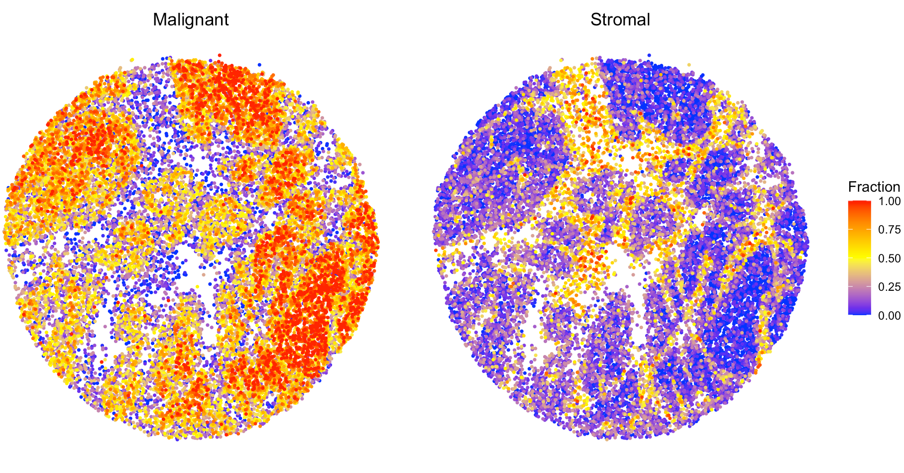
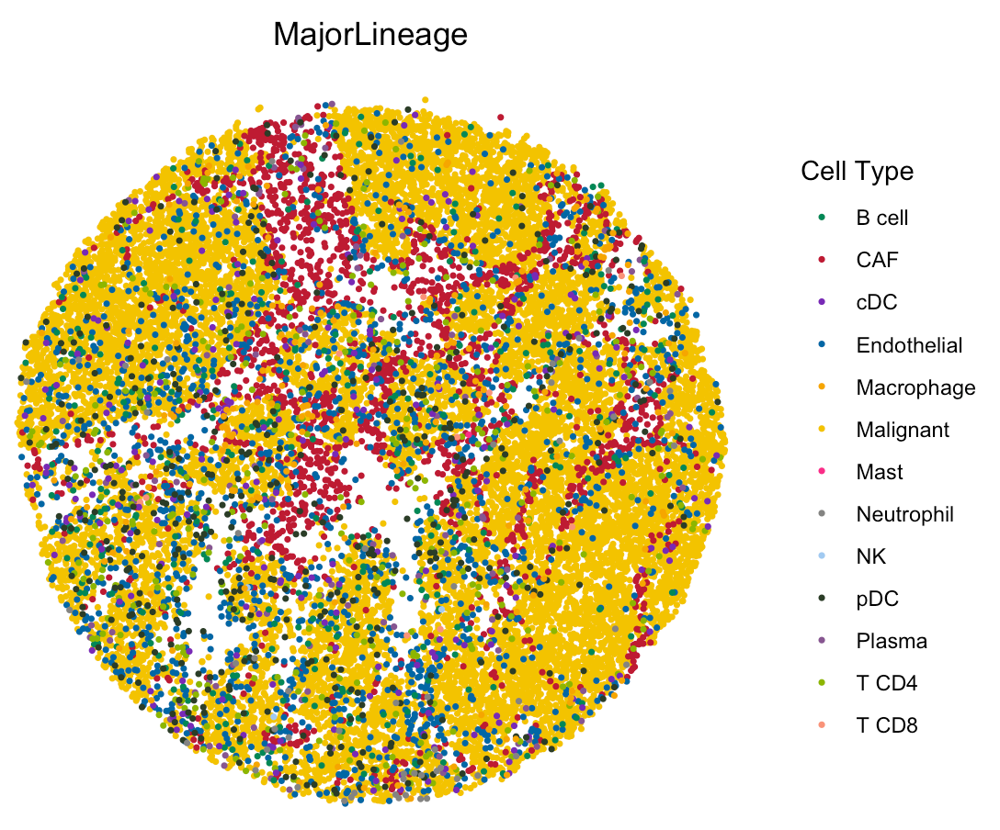

Application to high resolution spatial transcriptomics data
Source:vignettes/hiresST_CRC.Rmd
hiresST_CRC.RmdThis tutorial demonstrates how to apply SpaCET to a colorectal cancer Slide-seq dataset from Zhao et al, 2021. Each bead is 10 µm in diameter covering 1-2 cells. Before running the tutorial, make sure that the SpaCET package and its dependencies have been installed.
Create SpaCET object
User need create.SpaCET.object to create a SpaCET object
by preparing four types of input data referring to a tumor ST
sample.
- spatial transcriptomics count data. The spatial transcriptomics count data must be in the format of matrix with gene name (row) x spot ID (column).
- spatial location information. The spot coordinates should be in the format of matrix with spot ID (row) x coordinates (column). This 1st and 2nd columns represent X and Y coordinates, respectively.
- path to the H&E image file. The image path can be NA if unavailable.
- platform.
library(SpaCET)
hiresST_Path <- system.file("extdata", 'hiresST_CRC', package = 'SpaCET')
# load count matrix
load(paste0(hiresST_Path,"/counts.rda"))
# show count matrix
counts[1:6,1:3]
## 6 x 3 sparse Matrix of class "dgCMatrix"
## 2364.115x3072.225 3484.52x1734.005 2279.745x2951.975
## A1BG . . .
## A1CF . 1 2
## A2M . . .
## A2ML1 . . .
## A3GALT2 . . .
## A4GALT . . .
# load count matrix
load(paste0(hiresST_Path,"/spotCoordinates.rda"))
# show count matrix
head(spotCoordinates)
## X Y
## 2364.115x3072.225 2364.115 3072.225
## 3484.52x1734.005 3484.520 1734.005
## 2279.745x2951.975 2279.745 2951.975
## 3061.825x1556.49 3061.825 1556.490
## 2274.22x2982.525 2274.220 2982.525
## 2986.945x1603.68 2986.945 1603.680
# create a SpaCET object.
SpaCET_obj <- create.SpaCET.object(
counts=counts,
spotCoordinates=spotCoordinates,
imagePath=NA,
platform = "SlideSeq"
)
# show this object.
str(SpaCET_obj)Deconvolve ST data
We use the in-house reference to deconvolve this ST sample.
# deconvolve ST data; ~30 minutes
SpaCET_obj <- SpaCET.deconvolution(SpaCET_obj, cancerType="CRC", coreNo=6)
# Since Windows does not support parallel computation, please set coreNo=1 for Windows OS.
# show the ST deconvolution results
SpaCET_obj@results$deconvolution$propMat[1:13,1:3]
## 2364.115x3072.225 3484.52x1734.005 2279.745x2951.975
## Malignant 1 1 1
## CAF 0 0 0
## Endothelial 0 0 0
## Plasma 0 0 0
## B cell 0 0 0
## T CD4 0 0 0
## T CD8 0 0 0
## NK 0 0 0
## cDC 0 0 0
## pDC 0 0 0
## Macrophage 0 0 0
## Mast 0 0 0
## Neutrophil 0 0 0Visualize the cell type proportion
We provide SpaCET.visualize.spatialFeature to present
the spatial distribution of cell types. spatialFeatures
could be a vector of cell types. If user would like to visualize
multiple cell types in a single panel, you can assign a list to
spatialFeatures. For example, combine CAF and endothelial
cell types into stromal cell.
# show the spatial distribution of malignant cells and macrophages.
SpaCET.visualize.spatialFeature(
SpaCET_obj,
spatialType = "CellFraction",
spatialFeatures = list(Malignant=c("Malignant"),Stromal=c("CAF","Endothelial")),
sameScaleForFraction = TRUE,
pointSize = 0.6
)
User can check the most abundant cell type in each bead by setting
spatialType as “MostAbundantCellType”.
spatialFeatures could be “MajorLineage” or
“SubLineage”.
# load the color for cell types
load(paste0(hiresST_Path,"/colors_vector.rda"))
# show colors
head(colors_vector,3)
## Malignant CAF Endothelial
## "#f3c300" "#be0032" "#0067a5"
# show the spatial distribution of all cell types.
SpaCET.visualize.spatialFeature(
SpaCET_obj,
spatialType = "MostAbundantCellType",
spatialFeatures = "MajorLineage",
colors = colors_vector,
pointSize = 0.6
)